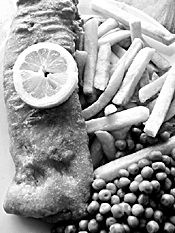

Fish for Lent

You may have to hunt for them in New York, but I promise you that starting on Ash Wednesday and continuing on Friday and every Friday until Easter you can find terrific fish fries, in Catholic churches, parochial school gymnasiums, fire halls, and lodges such as Moose, Elk, and the Masons. Here in Pittsburgh our local Catholic newspaper, Pittsburgh Catholic, lists them on their website.
Last year Poppy and I embarked on a mission to try a different fish fry every Friday during the Lenten season. We were amazed at how delicious some of them were. Naturally we had to kiss a few frogs—over-breaded, big, greasy hunks of tough cod served with flaccid, under-cooked frozen French fries. But more often than we expected we were served fresh, lightly breaded and fried, delicately flavored filets, some with what looked and tasted like hand cut French fries, often with home-made haluski or pierogies, and usually an assortment of home-made desserts, all for $6 or $7.
I recommend that you call your local Catholic churches and find out where the fish fries are in your neighborhood; this is the season to get really fresh fish.
Comments
I’m sorry I missed out on these Catholic food safaris!
We went to our first one on Friday night and it will be hard to top. The church is in Shadyside, Sacred Heart, and they are more organized than most, with two women taking orders and payment, another handing the orders to the kitchen and directing diners to seats, and parish youngsters delivering the dinners to the tables.
For $6.50 each we got a complete dinner, with baked or fried fish, cole slaw, french fries, roll and coffee or tea. The fried fish was perfect, just enough breading and not too greasy. For $1.50 we could have an order of church lady haluski, and home made pies were an extra $1.50/slice. Billy chose banana cream and I had the chocolate peanut butter; both were rich and creamy enough to leave us feeling very satisfied.
Aren’t these fish fries supposed to be about giving something up?! BTW, we got there at 5:30 and walked right in, but by 6:30 when we were leaving there was a long line, so for my Pittsburgh readers, get there early!
Sounds so fun! I’m going to look into Catholic churches here to see if there are any possibilities. Sounds like the fabulous Greek Food Festival!
If you are willing to go to the boroughs (boros?) you will definitely find some; it may be more difficult in Manhattan. Don’t forget to try Catholic schools as well as neighborhood fire halls. Keep your eyes open for posters and flyers and read the metro section of the paper, checking the back pages for the religious classifieds.
Add a comment